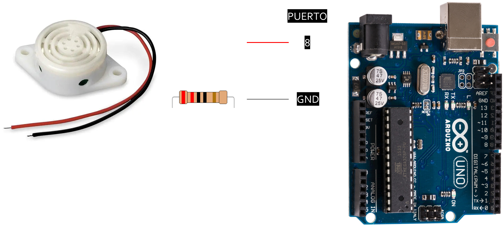
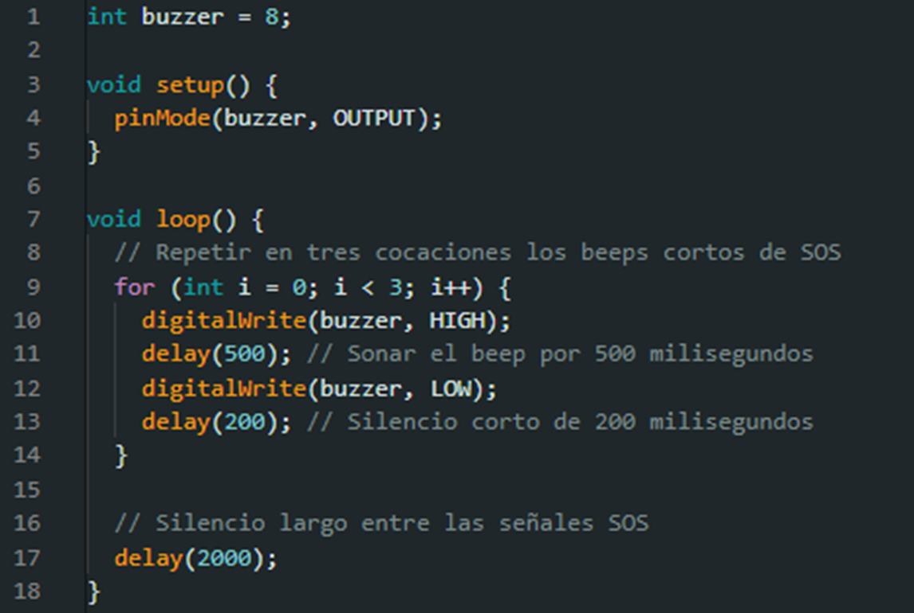
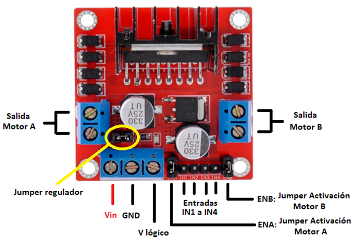
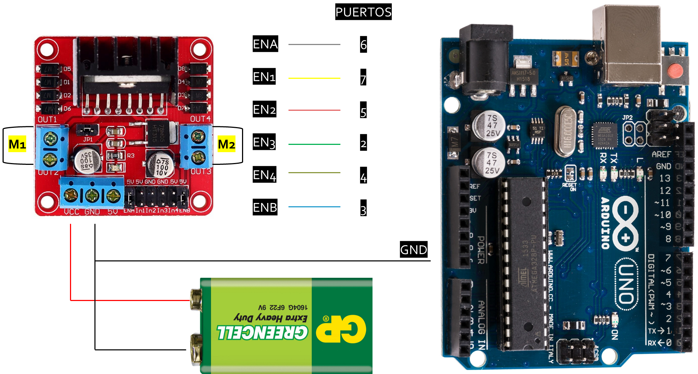
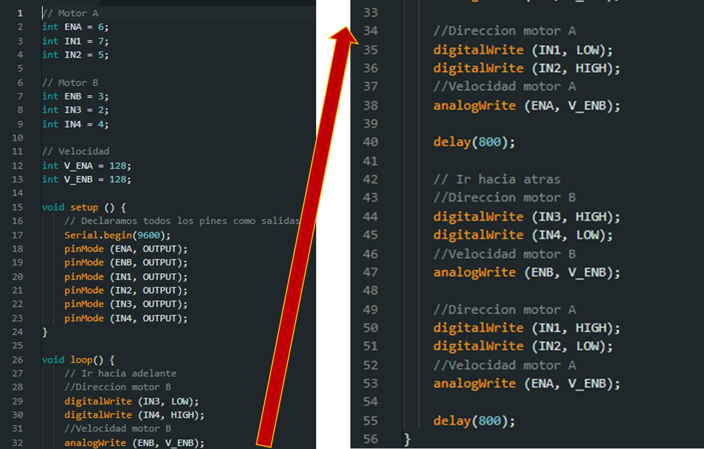

Temas:
- Proyecto I: S.O.S. con buzzer.
- Proyecto II: Motorreductor.
Proyecto I: S.O.S. con buzzer


Proyecto II: Motorreductor

El puente H es un circuito electrónico que se utiliza para controlar la dirección y velocidad de un motor, especialmente en aplicaciones de robótica y control de motores.
El puente H permite que Arduino controle estos motores de manera eficiente y precisa, fundamental para proyectos como robots o sistemas de automatización.
Conexiones del puente H:
ENA y ENB son los pines de habilitación (enable) para los dos motores. ENA y ENB se utilizan para controlar la velocidad del motor conectado a cada lado.
IN1, IN2, IN3 e IN4 son los pines de entrada de control que determinan la dirección de giro de cada motor.
- ENA: Controla la velocidad del motor A.
- IN1 e IN2: Controlan la dirección del motor A. Por ejemplo, si IN1 está alto (HIGH) e IN2 bajo (LOW), el motor girará en una dirección, pero si se cambia IN1 por estado bajo (LOW) e IN2 a alto (HIGH), el motor girará en la dirección contraria.
- ENB: Controla la velocidad del motor B.
- IN3 e IN4: Controlan la dirección del motor B, de manera similar a IN1 e IN2, pero para el segundo motor.
Conexión con Arduino:

